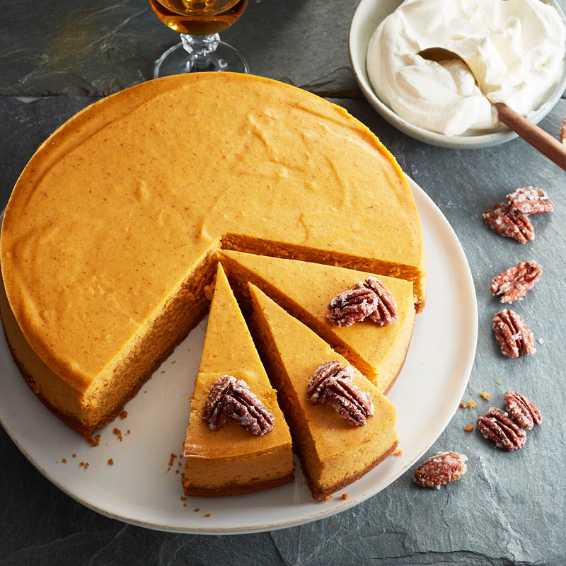

Pumpkin Cheesecake

- 1 1/2 cups crushed gingersnap cookies
- 1/2 cup finely chopped pecans
- 1/3 cup butter, melted
- 2 (8 ounce) packages cream cheese, softened
- 3/4 cup white sugar, divided
- 1 teaspoon vanilla extract
- 3 eggs
- 1 cup canned pumpkin
- 3/4 teaspoon ground cinnamon
- 1/4 teaspoon ground nutmeg
Directions
- Preheat oven to 350 degrees F (175 degrees C). In a medium bowl, mix together the crushed gingersnap cookies, pecans, and butter. Press into the bottom, and about 1 inch up the sides of a 9 inch springform pan. Bake crust 10 minutes in the preheated oven. Set aside to cool.
- In a medium bowl, mix together the cream cheese, 1/2 cup sugar, and vanilla just until smooth. Mix in eggs one at a time, blending well after each. Set aside 1 cup of the mixture. Blend 1/4 cup sugar, pumpkin, cinnamon, and nutmeg into the remaining mixture.
- Spread the pumpkin flavored batter into the crust, and drop the plain batter by spoonfuls onto the top. Swirl with a knife to create a marbled effect.
- Bake 55 minutes in the preheated oven, or until filling is set. Run a knife around the edge of the pan. Allow to cool before removing pan rim. Chill for at least 4 hours before serving.